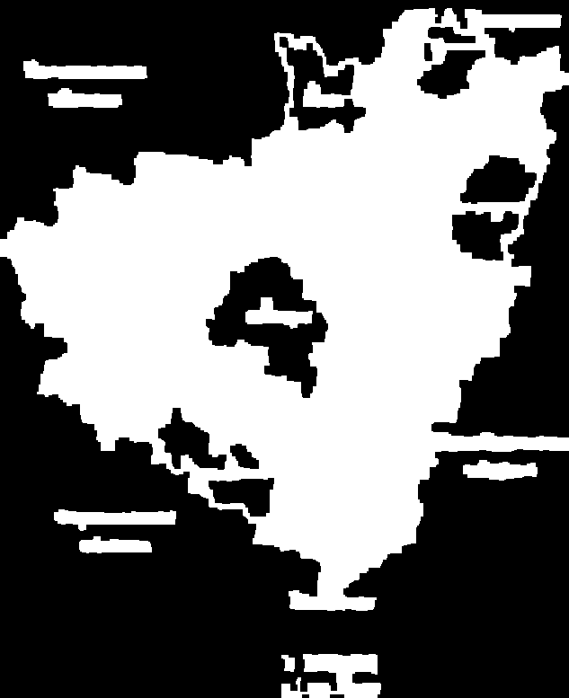
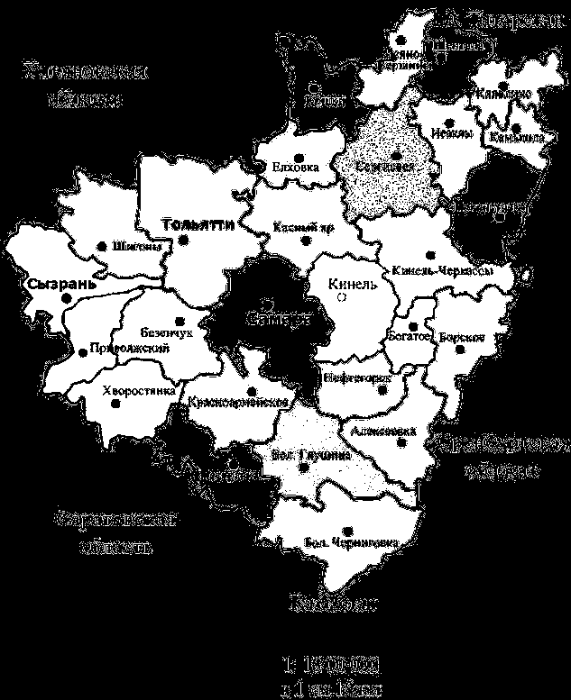
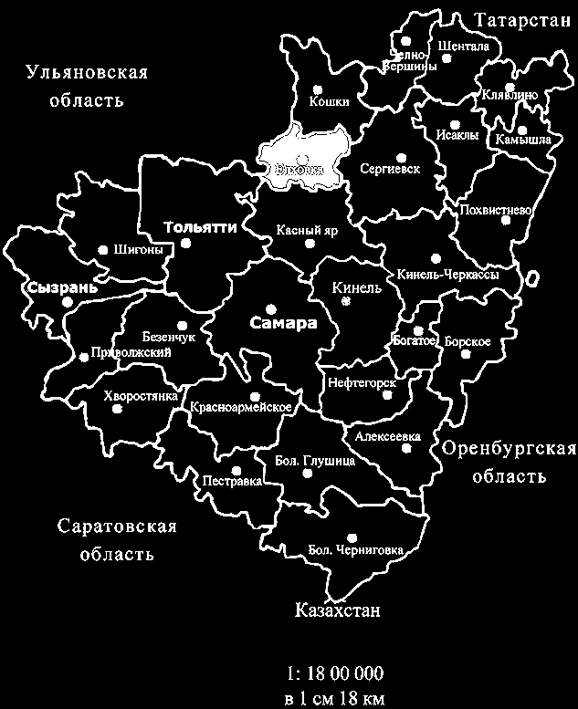
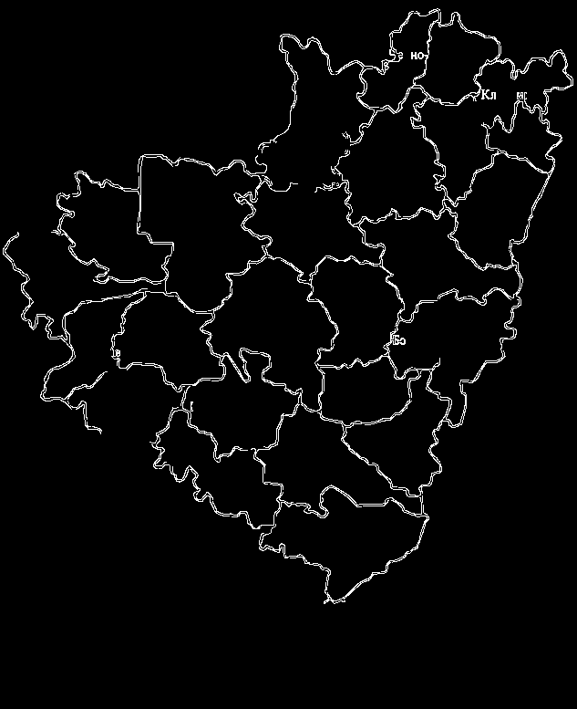
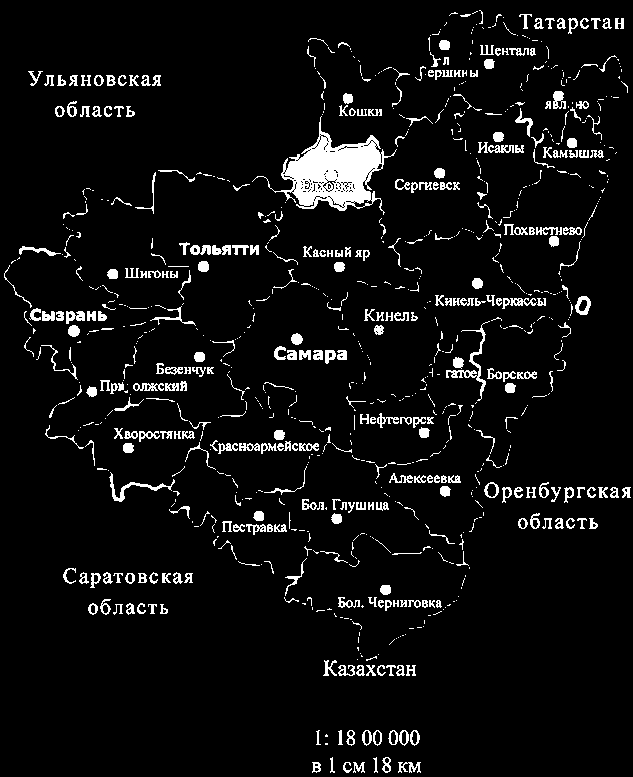
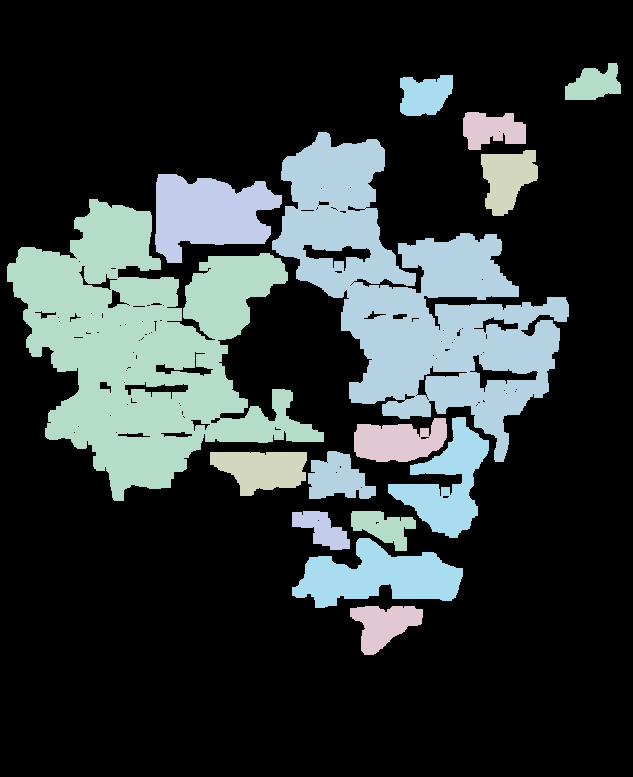
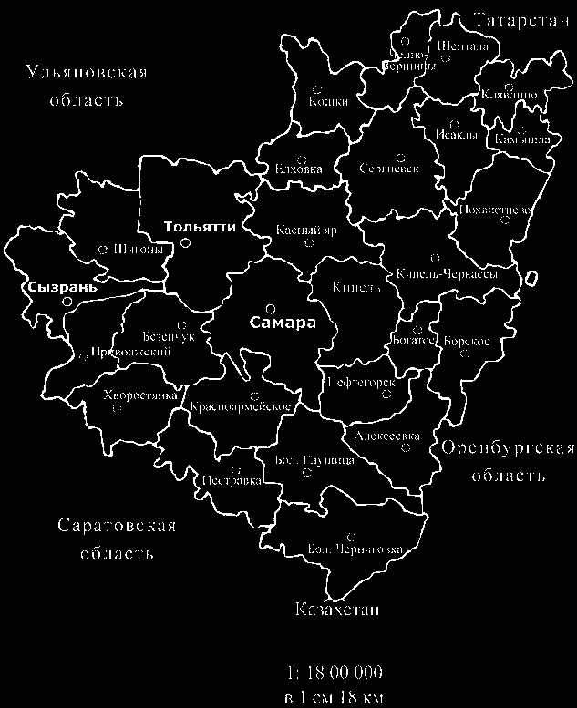

Каждая маска — шаг алгоритма. Посмотрите, где расхождение с оригиналом, и скажите.
Шаг 1: территория (тёмнее 250)

белое = единый контур карты (должна быть вся территория)
Шаг 2: заливки областей (180–250)

белое = оттенки-заливки областей
Шаг 3: тёмные линии (границы <200)

белое = границы областей + подписи
Шаг 3a: ТОЛЬКО границы

длинные линии (diam>70) — границы областей, без текста
Шаг 3c: остальное (текст+точки)

текст подписей + кружки городов
Шаг 3b: заливки по компактности (erode)

каждая заливка-область своим цветом (Елховка должна быть областью)
Шаг 4: города (тёмнее 80)

белое = кружки-столицы + текст
Итоговый SVG
пример: контур + точки (это не трассировка, а заглушка — пока жду вашей проверки масок)